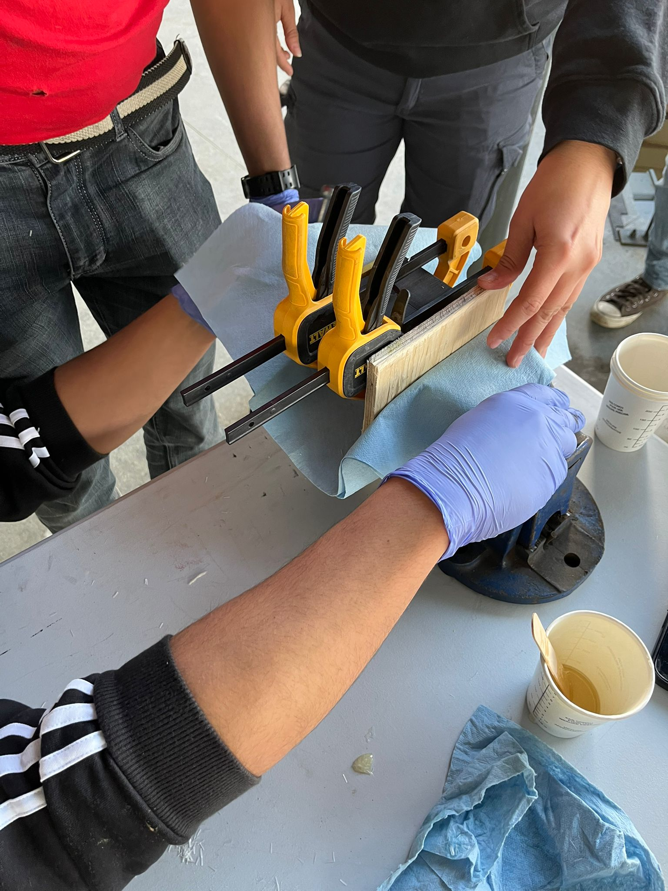

Materials & Structural Team Lead at Schulich's experimental sounding rocketry team. Twenty months running an 8-engineer sub-team through full design-build-fly cycles — composite layup selection, ANSYS FEA against thrust / bending / impact loads, and post-cure dimensional certification.
SOAR — the Schulich Off-world Aerospace Research team — designs, builds, and flies experimental hybrid sounding rockets out of the University of Calgary. Hybrid in the rocketry sense means nitrous oxide oxidiser, solid fuel grain: harder to tune than a solid motor and harder to plumb than a liquid one. As Materials & Structural Lead, I ran the structural sub-team through the full design-build-fly cycle — concept through composite layup, validation, and flight verification.



On a competition rocket, structural decisions sit inside a tight mass budget. The job wasn't to specify the highest-performing composite for every section — it was to pick the right laminate per region given expected loads, fabrication realism, and what the layup team could actually achieve repeatably under vacuum.
That meant trading carbon-fibre stiffness against fibreglass damage tolerance where impact loads dominated, and going hybrid where bending and torsional stiffness had to coexist in the same section. Each candidate ran through ANSYS FEA against worst-case axial-thrust, aerodynamic-bending, and landing-impact cases before any prepreg was cut.
The wet-layup process is unforgiving — fibre orientation, resin ratio, and bag pressure all have to land in spec before cure, and there's no way to fix a void after the resin has set. Post-cure, every section went through dimensional inspection to certify integrity before flight. No untested section bolts onto a rocket.
Spaceport America Cup is the world's largest intercollegiate rocketry competition. The structural team's work — laminate selection, FEA-validated load paths, and certified post-cure inspection — held up through the build and through the flight. The team brought home first.
More on the team at soar-rockets.ca
The most useful thing I took out of SOAR wasn't the FEA technique or the layup recipe — both still genuinely useful — but the discipline of designing for a system that will only fly once before you find out whether anything was wrong. You don't iterate on launch day. You iterate on every step before it.
Engineering leadership at the student-team level looks small from the outside, but the constraints are real and the accountability is total — if a layup fails post-cure, the rocket doesn't fly, and there's no one else to blame. The schedule has to bend around composite cure times, when equipment is free, and which teammate has been on shift all night for a different course. That's a useful place to learn how to lead.